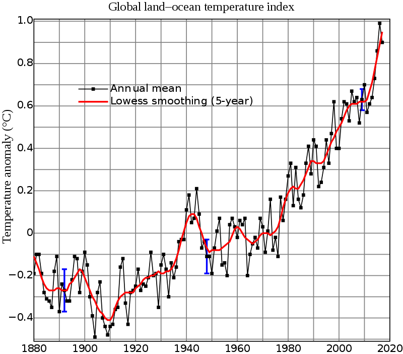
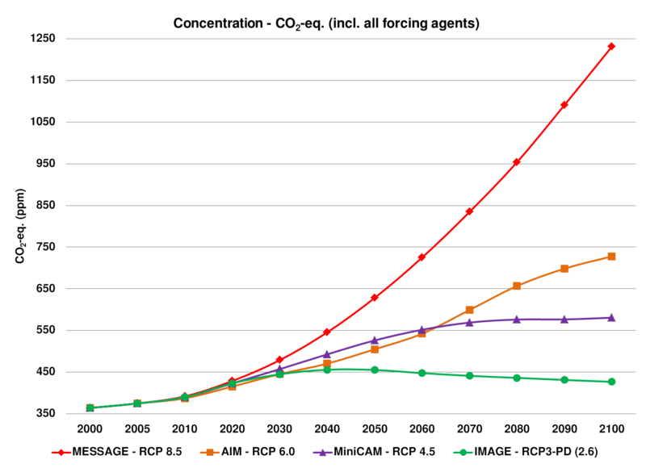

 Global warming is the observed century-scale rise in the average temperature of the Earth's climate system and its related effects, as part of climate change. Multiple lines of scientific evidence show that the climate system is warming.Many of the observed changes since the 1950s are unprecedented in the instrumental temperature record, and in paleoclimate proxy records of climate change over thousands to millions of years. The terms Global warming and climate change are often used interchangeably; a 2008 NASA article defines global warming as "the increase in Earth's average surface temperature due to rising levels of greenhouse gases", and climate change as "a long-term change in the Earth's climate, or of a region on Earth".
In 2013, the Intergovernmental Panel on Climate Change (IPCC) Fifth Assessment Report concluded, "It is extremely likely that human influence has been the dominant cause of the observed warming since the mid-20th century."The largest human influence has been the emission of greenhouse gases such as carbon dioxide, methane, and nitrous oxide. In view of the dominant role of human activity in causing it, the phenomenon is sometimes called "anthropogenic global warming" or "anthropogenic climate change". Climate model projections summarized in the report indicated that during the 21st century, the global surface temperature is likely to rise a further 0.3 to 1.7 °C (0.5 to 3.1 °F) to 2.6 to 4.8 °C (4.7 to 8.6 °F) depending on the rate of greenhouse gas emissions.These findings have been recognized by the national science academies of the major industrialized nations and are not disputed by any scientific body of national or international standing.
 Future climate change and associated impacts will differ from region to region. Anticipated effects include rising sea levels, changing precipitation, and expansion of deserts in the subtropics.Warming is expected to be greater over land than over the oceans and greatest in the Arctic, with the continuing retreat of glaciers, permafrost, and sea ice. Other likely changes include more frequent extreme weather events such as heat waves, droughts, wildfires, heavy rainfall with floods, and heavy snowfall; ocean acidification; and species extinctions due to shifting temperature regimes. Effects significant to humans include the threat to food security from decreasing crop yields and the abandonment of populated areas due to rising sea levels. Because the climate system has a large "inertia" and greenhouse gases will remain in the atmosphere for a long time, many of these effects will persist for not only decades or centuries, but tens of thousands of years.
Possible societal responses to global warming include mitigation by emissions reduction, adaptation to its effects, building systems resilient to its effects, and possible future climate engineering. Most countries are parties to the United Nations Framework Convention on Climate Change (UNFCCC),whose ultimate objective is to prevent dangerous anthropogenic climate change. Parties to the UNFCCC have agreed that deep cuts in emissions are required and that global warming should be limited to well below 2.0 °C (3.6 °F) compared to pre-industrial levels, with efforts made to limit warming to 1.5 °C (2.7 °F).Some scientists call into question climate adaptation feasibility, with higher emissions scenarios, or the two degree temperature target.
Public reactions to global warming and concern about its effects are also increasing. A global 2015 Pew Research Center report showed that a median of 54% of all respondents asked consider it "a very serious problem". Significant regional differences exist, with Americans and Chinese (whose economies are responsible for the greatest annual CO2 emissions) among the least concerned.